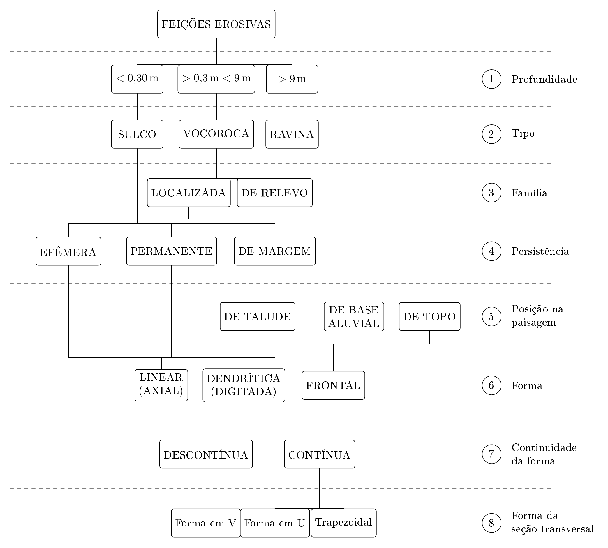
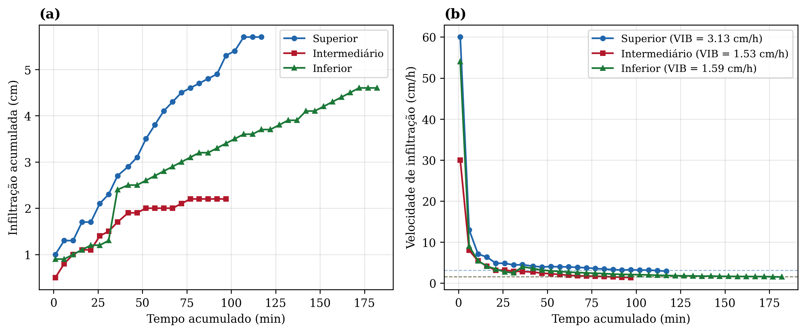
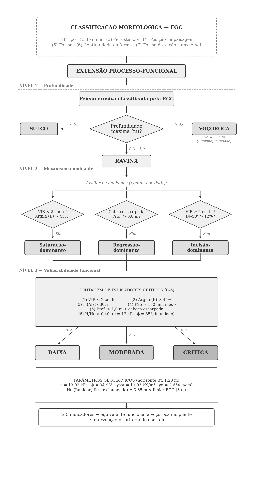
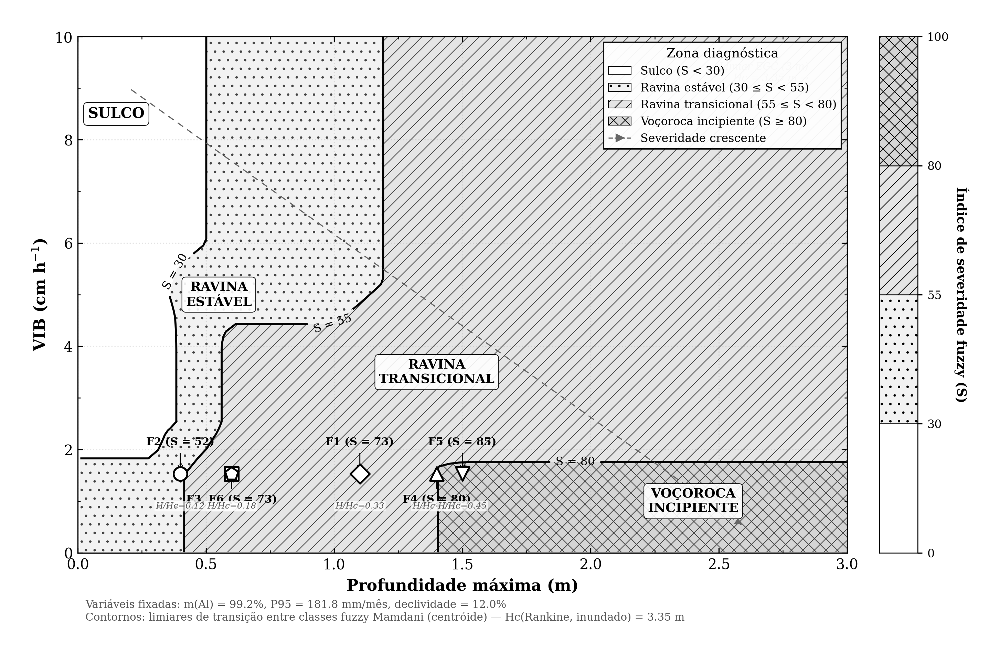

Limites da classificação morfológica e como parâmetros hidrodinâmicos ampliam o diagnóstico de ravinas em Plintossolos tropicais
Resumo
Classificações morfológicas de erosão linear tendem a homogeneizar feições com severidade processual distinta, especialmente em solos tropicais onde infiltração reduzida, toxicidade por alumínio e forçante pluviométrica sazonal condicionam trajetórias evolutivas aceleradas. Neste estudo avaliou-se se a inclusão de parâmetros hidrodinâmicos (velocidade de infiltração básica, VIB; precipitação P95) e geoquímicos (saturação por alumínio) amplia a capacidade da EGC em discriminar severidade de feições erosivas em Plintossolo Argilúvico Distrófico nos Tabuleiros Costeiros de Sergipe, Brasil. A EGC enquadrou seis feições (profundidade 0,40–1,50 m) como ravinas permanentes ativas em topo de vale, sem diferenciação de severidade. A VIB reduziu 51% entre o terço superior (3,13 cm/h) e o intermediário (1,53 cm/h), indicando transição para regime de escoamento-dominante sob intensidades recorrentes no período chuvoso, ao passo que horizontes subsuperficiais com saturação por alumínio de 84–99% são consistentes com restrição de cobertura vegetal e instabilidade de taludes sob umedecimento sazonal. Uma extensão processo-funcional em três níveis hierárquicos, complementada por inferência fuzzy Mamdani, reclassificou duas feições como voçorocas incipientes (severidade de 79,7 e 85,0), distinção validada por agrupamento hierárquico de Ward (silhouette = 0,434, k = 2) e que a classificação morfológica não captura. Um ábaco bidimensional (profundidade × VIB) sintetiza os contornos de severidade em formato de campo consultável sem computação. Os resultados sugerem que indicadores hidrodinâmicos e edáficos podem ampliar o diagnóstico de severidade erosiva em Plintossolos tropicais e subsidiar a priorização de intervenções.
Keywords: Process-based gully classification, fuzzy logic, erosion severity, Plinthosol, tropical weathering, Coastal Tablelands, Brazil
Highlights
- EGC morphological classification cannot differentiate severity in Plinthosol gullies
- Infiltration rate dropped 51% downslope, triggering runoff-dominated regime
- Mamdani fuzzy inference reclassified two features as incipient voçorocas
- A field-readable 2-D abacus synthesizes severity contours without computation
- Al saturation above 80% restricts vegetation and amplifies slope instability
Destaques
- A VIB reduziu 51% vertente abaixo, ativando regime de escoamento-dominante
- Inferência fuzzy Mamdani reclassificou duas feições como voçorocas incipientes
- Ábaco 2-D sintetiza contornos de severidade consultáveis em campo sem computação
1. Introdução
A erosão hídrica em Plintossolos subtropicais e de tabuleiros costeiros constitui um vetor crônico de degradação territorial na América do Sul, onde a convergência de elevada fração argilosa, condutividade hidráulica restritiva e sazonalidade pluviométrica extrema acelera a evolução de feições lineares [@cassol_et_al_2023; @de_oliveira_et_al_2024].
Essa vulnerabilidade intrínseca assume contornos críticos diante de projeções que indicam incrementos superiores a 11% na magnitude da erosão hídrica nessas latitudes até 2090 [@xiong_et_al_2024], cenário em que solos de permeabilidade subsuperficial restrita concentrarão parcela desproporcional do risco e da produção de sedimentos [@kuhn_et_al_2023].
A formulação de diretrizes de controle demanda a tipificação rigorosa dessas feições; contudo, a diferenciação operacional entre ravinas e voçorocas permanece globalmente ambígua [@kumar_et_al_2020]. A literatura recente registra uso sobreposto da nomenclatura para feições sob escoamento concentrado [@amare_et_al_2019; @frankl_et_al_2021], evidenciando que critérios topológicos baseados exclusivamente na permanência do fluxo e no aprofundamento vertical transcendem as classificações puramente morfométricas predominantes [@rashmi_et_al_2021; @mohapatra_2022; @ganerod_et_al_2023].
A taxonomia morfológica foi sistematicamente unificada pela Elementary Gully Classification (EGC) [@thwaites_et_al_2022], um arcabouço que tipifica feições lineares mediante a integração de sua posição na vertente, dinâmica de atividade, geometria em planta transversal e classe de profundidade.
Embora a EGC tenha estabelecido um padrão métrico rigoroso em ambientes temperados e semiáridos, sua transposição direta para Plintossolos tropicais enfrenta o viés de homogeneizar feições com severidade processual muito distinta [@poesen_2018]. Essa imprecisão materializa-se quando a classificação enquadra na mesma categoria morfológica vertentes cujo destacamento responde a mecanismos hidrodinâmicos díspares, não captando o gradiente contínuo de intensidade erosiva subjacente [@poesen_et_al_2003].
Em unidades pedológicas dominadas por horizontes plínticos coesos, a trajetória evolutiva das ravinas é balizada por um limiar de velocidade de infiltração básica frequentemente inferior a 2 cm/h e por uma toxicidade subsuperficial por alumínio que inviabiliza o aprofundamento radicular estabilizador [@silva_rodrigues_et_al_2021; @ribeiro_filho_et_al_2023].
O umedecimento sazonal dessas fraturas acelera a instabilidade de taludes por cisalhamento antes que a profundidade atinja o critério clásico adotado para voçorocamento, expondo uma insuficiência diagnóstica: o enquadramento puramente geométrico oculta a severidade hidrodinâmica e edáfica que governa o colapso estrutural [@morgan_rickson_2020; @igwe_2012]. Esse mascaramento inviabiliza a priorização de intervenções conservacionistas, visto que barreiras permeáveis e estruturas de dissipação demandam dimensionamento ancorado na taxa de escoamento e na coesão do substrato, e não apenas nas dimensões externas da ravina [@stokes_et_al_2014; @castillo_2014].
Até o presente momento, a EGC não foi calibrada para incorporar a redução de infiltração, a suscetibilidade química a colapsos e o contraste de precipitação de projeto como vetores contínuos de severidade em Plintossolos tropicais, restando uma lacuna entre a geometria da feição e sua energia processual.
Neste estudo avalia-se se a inclusão analítica da velocidade de infiltração básica, da precipitação extrema e da saturação por alumínio permite ampliar a capacidade da EGC em discriminar a severidade de feições erosivas em Plintossolo Argilúvico Distrófico nos Tabuleiros Costeiros de Sergipe, Brasil. O estudo também examina se um gradiente contínuo de severidade, estruturado por inferência fuzzy Mamdani, captura transições de instabilidade que a tipificação discreta convencional tende a omistir, fornecendo uma base hierárquica verificável para intervenções de bioengenharia.
2. Materiais e métodos
2.1. Caracterização da área de estudo
O estudo foi conduzido em uma área localizada no povoado Timbó, município de São Cristóvão (-10.927923° de latitude; -37.195820° de longitude), a aproximadamente 22,3 km de Aracaju, capital do estado de Sergipe, na região Nordeste do Brasil. A área está inserida na unidade geomorfológica dos tabuleiros costeiros, pertencentes ao Grupo Barreiras, que correspondem a cerca de 32% da superfície estadual [@azambuja_missura_araujo_2024].
A localidade climatológica úmida transita para estações concentradas severamente no período abril-setembro, sustentando precipitações médias consistentes de 1.400 mm e máximos críticos em maio (164,7 mm) sobre perfis restritos de Plintossolo Háplico Distrófico e Neossolo Flúvico Psamítico [@nascimento_pedrotti_2004; @duarte_santos_castelhano_2021]. Concomitantemente, enquanto o relevo amplificado do taboleiro exibe homogeneidade moderada em partes alteadas, o local isolado de implantação converge declividades elevadamente sinuosas (7% a 24%), arquitetando a convergência imediata do escoamento primário linear que potencializa vertentes suscetíveis (Figura 1). [Nota aos autores: Incluir mapa de localização em múltiplas escalas (Brasil → Sergipe → Área) com escala gráfica, norte e coordenadas.]

2.2. Classificação do solo
A identificação e classificação do perfil edáfico foi realizada segundo os protocolos do Sistema Brasileiro de Classificação de Solos (SiBCS) [@embrapa_2018], com base em caracterização morfológica conforme Tomé Júnior [@tome_junior_1997]. Para geração de base diagnóstica representativa das propriedades do Plintossolo junto às feições erosivas, procedeu-se à abertura de uma trincheira com dimensões de 1,5 m de profundidade, 1,5 m de comprimento e 1,0 m de largura, localizada próximo à Feição 1, permitindo descrição detalhada de cor, textura, estrutura, consistência e demais atributos morfológicos de cada horizonte.
Reconhece-se que a caracterização edáfica baseada em perfil único constitui limitação, pois a heterogeneidade lateral ao longo da vertente pode não ser integralmente captada; contudo, o perfil foi posicionado em setor representativo da topossequência, e a extrapolação aos demais pontos é respaldada pela uniformidade da classe de solo mapeada na área [@nascimento_pedrotti_2004].
Amostras de cada horizonte foram coletadas em triplicata e submetidas a análises físicas (granulometria pelo método da pipeta com dispersante NaOH 1 mol/L, conforme metodologia da Embrapa [@embrapa_2018]) e químicas (pH em água 1:2,5; cátions trocáveis Al³⁺, K⁺, Ca²⁺, Mg²⁺ por extração com KCl 1 mol/L; fósforo disponível por Mehlich-1; carbono orgânico por método de Walkley-Black), fundamentando a classificação taxonômica. Os resultados analíticos do perfil são apresentados na Tabela 1.
Tabela 1. Atributos químicos e físicos do Plintossolo Argilúvico Distrófico
| Atributos | Ap (0–10 cm) | AB (10–25 cm) | BAc (25–40 cm) | Bt (40–150+ cm) |
|---|---|---|---|---|
| pH em água (1:2,5) | 5,2 | 4,5 | 4,6 | 4,6 |
| P (Fósforo) – mg/dm3 | 1,4 | 1,4 | 1,4 | 1,4 |
| K (Potássio) – mg/dm3 | 82,1 | 17,0 | 6,5 | 5,6 |
| Al (Alumínio) – cmolc/dm3 | 0,56 | 2,9 | 3,7 | 5,9 |
| T (CTC a pH 7,0) – cmolc/dm3 | 5,3 | 4,1 | 4,4 | 7,9 |
| m (Saturação por Alumínio) - % | 15,2 | 89,8 | 99,2 | 84,7 |
| V (Saturação por Bases) - % | 58,4 | 14,5 | 9,5 | 13,6 |
| Areia - % | 51,5 | 43,6 | 43,5 | 39,65 |
| Silte - % | 14,9 | 8,9 | 7,5 | 8,9 |
| Argila - % | 33,4 | 47,4 | 49,2 | 51,4 |
| Textura | Franco argilo-arenosa | Argilosa | Argilosa | Argilosa |
2.2.1 Caracterização geotécnica
Para a obtenção dos parâmetros de resistência ao cisalhamento, extraiu-se uma amostra indeformada (bloco de solo) do talude exposto adjacente à Feição 1, à profundidade de 1,20 m, correspondente ao horizonte Bt. O material foi classificado como pedregulho areno-argiloso, vermelho escuro, compatível com a presença de nódulos plínticos ferruginosos cimentados na matriz argilosa.
Os ensaios de cisalhamento direto foram realizados na modalidade rápido, não adensado e inundado (ASTM D 6528-17), com quatro corpos de prova (CPs) moldados com dimensões aproximadas de 50 mm × 50 mm × 20 mm, sob tensões normais de 20, 40, 80 e 200 kPa e velocidade de cisalhamento de 0,5 mm/min (deformação controlada). A inundação prévia dos CPs simula a condição crítica de campo em que a saturação por precipitação intensa reduz a sucção matricial e a resistência efetiva [@fredlund_rahardjo_1993]. A massa específica dos grãos (\(\gamma_g = 2{,}654\) g/cm³) foi determinada pelo método DNER-ME 93-94.
Tabela 1a. Parâmetros de resistência ao cisalhamento do Plintossolo (horizonte Bt, 1,20 m) — ensaio rápido, não adensado, inundado.
| Parâmetro | Valor |
|---|---|
| Coesão (\(c\)), kPa | 13,02 |
| Ângulo de atrito interno (\(\phi\)), graus | 34,93 |
| Massa específica dos grãos (\(\gamma_g\)), g/cm³ | 2,654 |
| Peso específico saturado (\(\gamma_{sat}\)), kN/m³ | 19,93 |
Tabela 1b. Características dos corpos de prova e resistência ao cisalhamento de pico.
| Parâmetro | CP 1 | CP 2 | CP 3 | CP 4 |
|---|---|---|---|---|
| Tensão normal (\(\sigma_n\)), kPa | 20,0 | 40,0 | 80,0 | 200,0 |
| Massa esp. seca inicial (g/cm³) | 1,531 | 1,491 | 1,294 | 1,320 |
| Índice de vazios inicial (\(e_i\)) | 0,734 | 0,780 | 1,051 | 1,011 |
| Grau de saturação inicial (\(S_i\)), % | 42,3 | 36,2 | 36,2 | 37,9 |
| Índice de vazios final (\(e_f\)) | 0,666 | 0,620 | 0,642 | 0,487 |
| Grau de saturação final (\(S_f\)), % | 118,3 | 109,9 | 117,6 | 138,9 |
| Resistência de pico (\(\tau_p\)), kPa | 22,61 | 45,70 | 69,19 | 152,07 |
A envoltória de Mohr-Coulomb obtida (\(\tau = 13{,}02 + \sigma_n \cdot \tan 34{,}93°\)) indica coesão baixa e ângulo de atrito moderado a alto. A redução do índice de vazios ao final do cisalhamento (\(\Delta e\) de \(-0{,}07\) a \(-0{,}52\)) confirma comportamento contrátil (solo normalmente adensado), que sob cisalhamento rápido tende a gerar poropressão positiva e reduzir a tensão efetiva, ampliando a suscetibilidade a rupturas durante eventos de saturação rápida [@caputo_2015]. A altura crítica de corte vertical sob condição inundada, estimada pela teoria de Rankine com fissura de tração preenchida por água, resultou em \(H_c = 3{,}35\) m — valor próximo ao limiar de 3 m da EGC para classificação como voçoroca, o que sugere convergência entre o critério morfométrico e a limitação geotécnica do substrato.
A Velocidade de Infiltração Básica (VIB) foi determinada mediante o método de infiltrômetro de anéis concêntricos descrito por Bernardo et al. [-@bernardo_et_al_2008]. Utilizou-se equipamento composto por dois anéis de diâmetros 20 cm (interno) e 40 cm (externo), com altura de 15 cm, cravados a 5 cm de profundidade no solo para minimizar o fluxo lateral. Os anéis foram instalados em três pontos estratificados (terço superior, médio e inferior da vertente), com três réplicas por posição (total de nove ensaios).
A água utilizada foi armazenada em reservatório sombreado para manter a temperatura próxima à ambiente (25 ± 2 °C), minimizando o efeito da variação de viscosidade sobre as taxas de infiltração. Não foi aplicada correção de capilaridade, o que constitui limitação do método em solos com fração argilosa elevada, onde a sucção matricial pode superestimar a VIB inicial antes da estabilização.
Cada ensaio teve duração mínima de 120 minutos, com leituras registradas a intervalos de 5 minutos nos primeiros 30 min e de 10 minutos até estabilização. O critério de estabilização adotado foi a obtenção de três leituras consecutivas sem variação superior a 10% entre si. Para fins de síntese, a VIB em cada posição foi estimada como a média das cinco últimas leituras da série temporal do ensaio, utilizando a velocidade média expressa em cm/h.
2.3 Morfologia e caracterização topográfica da ravina
A aquisição de dados geoespaciais de alta resolução foi conduzida mediante sistema aéreo não tripulado (UAV) modelo DJI Phantom 4 PRO (SZ DJI Technology Co., Ltd., Shenzhen, China), a altitude de voo de 40 m acima do terreno, gerando ortomosaicos com resolução espacial (GSD) de aproximadamente 3 cm por pixel. Dois voos fotogramétricos foram planejados com sobreposição longitudinal de 80% e lateral de 60%, abrangendo aproximadamente 5 hectares.
O processamento fotogramétrico para geração do Modelo Digital de Elevação (MDE) e nuvem de pontos (densidade média de 120 pontos/m²) foi realizado no software Agisoft Metashape Professional Edition 1.6. Embora a ausência de pontos de controle terrestres (GCPs) limite a acurácia posicional absoluta ao GNSS embarcado (XY ≈ 1,5 m, Z ≈ 0,5 m), as métricas relativas viabilizaram a avaliação morfométrica detalhada de largura, comprimento e profundidade nas seções superior, média e inferior das incisões. Consequentemente, seis incisões erosivas foram identificadas e medidas sistematicamente na área, suportadas pela geração de ortomosaicos aéreos que se consolidam como técnica acurada para reconstrução topográfica e extração geométrica [@raj_et_al_2022; @wilkinson_et_al_2024]. Para contextualização da evolução morfológica temporal, conduziu-se adicionalmente análise multitemporal de imagens orbitais (2007–2023), rastreando a dinâmica da cobertura vegetal e da exposição edáfica.
2.4 Classificação dos processos erosivos
A tipificação das incisões erosivas conforme The Elementary Gully Classification (EGC) proposta por Thwaites et al. [-@thwaites_et_al_2022] foi operacionalizada seguindo a sequência decisória hierárquica de oito níveis (Figura 2) que considera posicionamento na paisagem, grau de atividade, forma em planta, geometria da seção transversal, tipo de cabeça erosiva e classes de profundidade.

O enquadramento decisório da EGC fundamentou-se na integração das medidas morfométricas com a interpretação métrica do MDE fotogramétrico, identificando as frentes de expansão, a organização espacial das feições e os padrões estruturais de conectividade hidrológica. Paralelamente às restrições edáficas inerentes do substrato, o regime climático mensal agregado (série 2005–2025) definiu as janelas sazonais de máxima propensão pluviométrica, constituindo a justaposição física governante para a intensificação do escoamento concentrado e a suscetível perenidade erosiva ao longo da vertente [@duarte_santos_castelhano_2021].
2.5 Análise exploratória de dados morfométricos
As variáveis morfométricas (largura, profundidade, comprimento) foram compiladas em matriz feição × atributo, a partir da qual se derivaram profundidade máxima, largura média e estimativa de volume mobilizável por aproximação geométrica de seção trapezoidal. As relações entre variáveis foram avaliadas por correlação de postos de Spearman (scipy.stats.spearmanr, SciPy 1.14, Python 3.13), adotando α = 0,05 sem correção para comparações múltiplas dado o caráter exploratório da análise e o tamanho amostral reduzido (n ≤ 6) [@zar_2014].
Para identificação de agrupamentos morfológicos entre feições, aplicou-se clusterização hierárquica aglomerativa pelo método de Ward, com distância euclidiana calculada sobre variáveis padronizadas por z-score (média = 0, σ = 1), utilizando scipy.cluster.hierarchy. Todos os resultados estatísticos devem ser interpretados como indicativos de tendência, não como evidência confirmatória, em razão do baixo poder estatístico inerente à amostra.
A VIB, quantificada por posição na vertente, foi utilizada como variável de contexto hidrológico para interpretação qualitativa da suscetibilidade erosiva, sem modelagem feição a feição, limitação decorrente da ausência de séries completas de infiltração por feição e por segmento e de medidas de condutividade hidráulica saturada.
2.6 Classificação processo-funcional complementar à EGC
Para superar as limitações da EGC na diferenciação de feições com profundidade inferior a 3 m porém com dinâmica funcional intensa, propôs-se uma classificação processo-funcional em três níveis hierárquicos, operando como camada decisória posterior à tipificação morfológica (Figura 7).
O primeiro nível reproduz o critério de profundidade da EGC (< 0,3 m → sulco; 0,3–3,0 m → ravina; > 3,0 m → voçoroca). O segundo nível identifica o mecanismo dominante mediante combinação de VIB, fração argilosa do horizonte B e geometria da cabeça erosiva, diferenciando processos de saturação-dominante (VIB < 2 cm/h e argilaB > 45%), incisão-dominante (VIB ≥ 2 cm/h e declividade > 12%) e regressão-dominante (cabeça escarpada e profundidade > 0,8 m).
O terceiro nível quantifica a vulnerabilidade funcional por contagem de cinco indicadores críticos (VIB < 2 cm/h, argilaB > 45%, saturação por alumínio m > 80%, P95 mensal > 150 mm e profundidade > 1,0 m com cabeça escarpada). Feições com quatro ou mais indicadores são classificadas como de vulnerabilidade crítica, correspondendo a equivalente funcional de voçoroca incipiente.
Adicionalmente, para tratar o continuum sulco–ravina–voçoroca como gradiente contínuo e não como dicotomia [@poesen_et_al_2003; @poesen_2018], implementou-se um sistema de inferência fuzzy tipo Mamdani [@mamdani_assilian_1975] com cinco variáveis de entrada (profundidade, VIB, saturação por alumínio, P95 mensal e declividade) e uma variável de saída contínua (índice de severidade, 0–100).
As funções de pertinência trapezoidais foram calibradas a partir dos limiares empíricos deste estudo (Material Suplementar, Figura S1). A variável de saída foi particionada em quatro conjuntos fuzzy: sulco [0, 0, 15, 30], ravina estável [15, 30, 45, 55], ravina transicional [40, 55, 70, 80] e voçoroca incipiente [65, 80, 100, 100].
A base de regras compreende 18 regras IF-THEN derivadas do conhecimento de campo e da literatura. A defuzzificação foi realizada pelo método do centróide. A implementação utilizou a biblioteca scikit-fuzzy 0.5.0 em Python 3.13.
A coerência interna da classificação foi avaliada por clustering hierárquico (Ward) e k-means (k = 2, k = 3) sobre a matriz morfométrica normalizada (profundidade, largura, comprimento e declividade) das cinco feições com dados completos, com coeficiente de silhouette como critério de qualidade do agrupamento.
Para consolidação dos resultados em formato operacional, construiu-se um ábaco bidimensional mediante redução paramétrica do sistema fuzzy pentavariado a uma superfície de severidade em duas dimensões. A redução consiste em fixar três das cinco variáveis de entrada nos valores representativos do sítio, de modo que o índice de severidade passa a depender exclusivamente da profundidade e da VIB conforme a expressão proposta na Equação 1.
| \(S(d, v) = F_{\text{Mamdani}}\!\left(d,\; v \;\middle|\; m_{\text{Al}} = 99{,}2\%,\; P_{95} = 181{,}8 \text{ mm},\; \theta = 12\%\right)\) | (1) |
onde \(d\) é a profundidade máxima da feição (m), \(v\) a velocidade de infiltração básica (cm/h), \(m_{\text{Al}}\) a saturação por alumínio do horizonte diagnóstico (%), \(P_{95}\) o percentil 95 da precipitação mensal (mm) e \(\theta\) a declividade local (%). \(F_{\text{Mamdani}}\) representa a saída defuzzificada pelo método do centróide do sistema de 18 regras descrito acima, avaliada sobre grade regular de 80 × 80 pontos no domínio \(d \in [0,\!01;\; 3{,}0]\) m e \(v \in [0,\!01;\; 10{,}0]\) cm/h. As isolinhas \(S = 30\), \(S = 55\) e \(S = 80\) particionam o espaço \(d \times v\) em quatro zonas diagnósticas (sulco, ravina estável, ravina transicional e voçoroca incipiente).
A lógica construtiva do ábaco inspira-se no paradigma de classificação MCT (Miniatura, Compactado, Tropical) proposto por Nogami e Villibor [-@nogami_villibor_1981; @nogami_villibor_1995], no qual solos tropicais são enquadrados em sete grupos por posição no espaço definido pelo coeficiente de deformabilidade \(c'\) (adimensional, obtido do ensaio Mini-MCV) e pelo índice de laterização (Equação 2).
| \(e' = \dfrac{P_i}{100} + \dfrac{20}{d'}\) | (2) |
onde \(P_i\) é a perda de massa por imersão em água (%) e \(d'\) o coeficiente angular da curva Mini-MCV (mm). No ábaco MCT, limites lineares no plano \(c' \times e'\) separam grupos lateríticos (LA, LA’, LG’) de não lateríticos (NA, NA’, NS’, NG’), permitindo enquadramento expedito sem ensaios complementares. A adaptação proposta preserva a estrutura bidimensional de consulta expedita, porém substitui os índices geotécnicos intrínsecos (\(c'\), \(e'\)) por variáveis hidrogeomorfológicas mensuráveis em campo (\(d\), \(v\)), e as fronteiras lineares entre grupos MCT pelas isolinhas não lineares de severidade fuzzy (\(S = 30, 55, 80\)), conferindo ao diagrama capacidade de gradação contínua que o ábaco MCT original, de natureza discreta, não possui.
3. Resultados e discussão
3.1 Inventário morfológico e aplicação da EGC
A aplicação da chave de classificação EGC [@thwaites_et_al_2022] resultou no enquadramento diagnóstico de seis incisões erosivas (Tabela 2) como permanentes e ativas, sem sinais de estabilização secundária ou revegetação parcial. A taxonomia integral foi efetivada nas Feições 1, 4 e 5 por possuírem calhas contínuas com registros elucidados nos segmentos superior, intermediário e inferior, ao passo que nas Feições 2, 3 e 6, incipientes e de extensão limitada, a parametrização de seção transversal e tipo de cabeça esteve restrita apenas ao terço superior. Contudo, embora os descritores dimensionais situem satisfatoriamente a abertura erosiva no relevo, a classificação morfológica descreve a geometria sem explicitar o mecanismo temporal subjacente dominante [@poesen_2018; @kumar_et_al_2020].
A persistência de feições trativas crônicas em Plintossolos sugere que há forte retroalimentação entre a restrição hidrodinâmica efetiva (VIB de 1,5–1,6 cm/h contida nos terços intermediário e inferior), a massiva geração de deflúvio concentrado em eventos que superem esse baixo limiar e a escassa resistência do epípedon limitante ao destacamento (horizonte Ap, 33% de argila).
Em hiatos pluviométricos secos, a coesão de face estática do bloco subsuperficial mascara provisoriamente a evolução contínua da escavação; entretanto, sob regime de saturação sazonal (abril–agosto, com recargas frequentes de 141–165 mm/mês), a franca ascensão das pressões intersticiais minimiza a tensão efetiva lateral, o que acelera desprendimentos no talude e propicia rápido alargamento e colapso basal de paredes [@cassol_et_al_2023]. Acompanhando esse vetor de desagregação morfológica da célula, a severidade cisalhante da erosão longitudinal sobre o leito consolidado é aferida analiticamente de forma análoga à Equação 3.
| \(\tau = \gamma \cdot R_h \cdot S\) | (3) |
Onde \(\gamma\) é o peso específico da água (kN/m³), \(R_h\) o raio hidráulico da seção (m) e \(S\) a declividade do leito (m/m). Preconizada para regime permanente e uniforme em canais abertos, a aplicação qualitativa da Equação 3 identifica os gradientes espaciais em que a energia erosiva atinge limiares restritivos. Nas declividades de 8–17% dos terços intermediários, \(\tau\) se amplifica proporcionalmente a ponto de superar a resistência basal do horizonte Ap e sustentar incisão vertical ativa [@lafayette_cantalice_coutinho_2011; @silva_rodrigues_et_al_2021].
Parametricamente, o ensaio de cisalhamento direto inundado (Tabela 1a) atestou a coesão do horizonte Bt em \(c = 13{,}02\) kPa e atrito nulo em \(\phi = 34{,}93°\), viabilizando a estimativa analítica da altura crítica de corte vertical saturado em \(H_c = 3{,}35\) m, segundo a teoria de Rankine com fissura de tração preenchida.
Embora o balanço global apresente estabilidade estática perfeitamente aceitável no equilíbrio instantâneo (FOS 2,2–8,4), e a razão de encastramento \(H/H_c\) opere com folgas variando de 0,12 (F2) a 0,45 (F5), as incisões mais aprofundadas já adentram a faixa crônica de degradação progressiva, onde repetidos ciclos de umedecimento-secagem e colapsos basais amortizam a coesão temporal e induzem o sistema tridimensional ao limiar gravitacional de ruptura [@firoozi_firoozi_2024; @vanmaercke_et_al_2021].
Tabela 2. Síntese tipológica e morfométrica das feições erosivas segundo a EGC
| Feição | Comp. (m) | Larg. média (m) | Prof. máx. (m) | Posição na paisagem | Atividade | Forma em planta | Seção transversal | Tipo de cabeça | Classe de profundidade |
|---|---|---|---|---|---|---|---|---|---|
| 1 | 35,0 | 1,37 | 1,10 | Topo de vale | Ativa | Composta/digitada | Em “U” | Vertical/escarpada | Moderadamente profunda |
| 2 | 8,0 | 1,87 | 0,40 | Topo de vale | Ativa | Linear | Em “V”a | Suavea | Rasa |
| 3 | 9,0 | 1,30 | 0,60 | Topo de vale | Ativa | Linear | Em “V”a | Suavea | Rasa |
| 4 | 20,2 | 1,39 | 1,40 | Topo de vale | Ativa | Linear | Em “V” | Vertical | Moderadamente profunda |
| 5 | 24,8 | 1,38 | 1,50 | Topo de vale | Ativa | Linear | Em “V” | Vertical/escarpada | Profunda |
| 6 | n.d. | 2,37 | 0,60 | Topo de vale | Ativa | Linear | Em “V”a | Suavea | Rasa |
a Classificação parcial: dados disponíveis apenas para segmento superior. n.d. = não determinado.
Fonte: Autores, com base na Elementary Gully Classification (EGC) [@thwaites_et_al_2022].
A atividade erosiva é indicada por cabeças abruptas, taludes sem cobertura vegetal e evidências de recuo regressivo na análise multitemporal de 16 anos (2007–2023, Figura 3). Nenhuma feição apresenta sinais de estabilização ou revegetação parcial.

A forma em planta é predominantemente linear nas Feições 2, 3, 4, 5 e 6, padrão característico de escoamento concentrado em perfis pedogênicos rasos em vias de exumação [@kumar_et_al_2020]. Em contraste, a Feição 1 exibe conformação dendrítica com ramificações laterais, refletindo a combinação de incisão vertical e colapso de margens sob forte convergência de fluxo em topos de vale argilosos [@sidorchuk_2006; @dey_et_al_2018].
Essa morfologia em planta é consistente com a seção transversal em “V” (Tabela 2), indicando incisão vertical dominada pela tensão cisalhante do escoamento. Nas declividades de 8–17% dos terços intermediários, a vazão confinada escava o substrato argiloso (49–51% de argila em BAc e Bt; Tabela 1) antes que a maceração lateral rompa a coesão basal [@cassol_et_al_2023]. À medida que a incisão aprofunda a cabeceira e desestabiliza as margens, a calha evolui para o padrão em “U”.
Na base dos braços dendríticos da Feição 1, a conformação trapezoidal (“U”) evidencia a perda de resistência ao cisalhamento dos taludes sob encharcamento contínuo durante a estação chuvosa (abril–agosto). Essa transição de “V” para “U” reflete o estágio de maturação da ravina, no qual a incisão do leito induz instabilidade basal e o subsequente colapso das margens [@bull_kirkby_1997; @kirkby_bracken_2009]. Esse mecanismo corrobora as observações de Podwojewski et al. [-@podwojewski_et_al_2020] em ravinas consolidadas, nas quais o recuo lateral estacional resulta de colapsos controlados pela variação do teor de umidade, dinâmica aplicável aos Tabuleiros Costeiros [@vanmaercke_et_al_2021].
Esse padrão alinha-se ao modelo de Dey et al. [-@dey_et_al_2018] para domínios lateríticos, no qual o alargamento da feição depende criticamente da deterioração da coesão do material saturado, e não apenas da tensão cisalhante transversal do escoamento. A instabilidade das paredes é governada pelo balanço entre a resistência interna do solo úmido e o alívio de tensão gerado pela incisão do leito [@kirkby_bracken_2009].
As feições mais profundas (Feições 1, 4 e 5) apresentam cabeceiras escarpadas quase verticais, associadas à formação de poços de dissipação (Plunge Pool). Conforme Flores-Cervantes et al. [-@flores_cervantes_et_al_2006], o recuo dessas fraturas depende do balanço espacial entre a escavação basal e o colapso por alívio de tensão do talude superior.
Nas declividades locais (8–17%), a convergência de escoamento sustenta o recuo contínuo do headcut [@vanmaercke_et_al_2021]. Rengers e Tucker [-@rengers_tucker_2015] reportam que até 80% do desprendimento volumétrico em ravinas processa-se pelo colapso da face vertical, fenômeno consistente com os depósitos sedimentares acumulados na base das Feições 4 e 5.
Em comparação, as feições rasas (Feições 2, 3 e 6) apresentam perfis longitudinais suaves nas cabeceiras, operando em estágio inicial de aprofundamento e ainda sem instabilidade maciça dos taludes [@dey_et_al_2018]. Contudo, a transição destas incisões incipientes para frentes escarpadas é acelerada durante a fase chuvosa (maio–agosto), quando a elevada recarga precipita o escoamento rápido na bacia de contribuição (VIB de 1,5 cm/h), ampliando a energia de chegada dos fluxos sobre o limite superior exposto [@cassol_et_al_2023].
Embora a EGC classifique todas as incisões como ravinas puras por restrição de profundidade (< 3,0 m), este enquadramento morfológico estático subestima o estágio funcional severo do sistema. A combinação de declividades acentuadas (7–24%), substrato coeso instável sob umidade acentuada e perda crônica de proteção superficial indica alta propensão ao cisalhamento reverso de taludes, projetando o escalonamento progressivo para voçorocamentos se a energia de fundo não for contida [@poesen_2018; @kumar_et_al_2020].
3.2 Condicionantes morfométricos, edáficos e hidráulicos
A progressão da erosão linear reflete-se na variação espacial da profundidade máxima, que oscilou de 0,40 m (Feição 2) a 1,50 m (Feição 5), com comprimentos totais entre 8,0 m (Feição 2) e 35,0 m (Feição 1), e largura média de 1,30 m (Feição 3) a 2,37 m (Feição 6) (Tabela 2). O aprofundamento mais severo concentra-se nos terços intermediários das incisões mais extensas (Feições 1, 4 e 5), posições onde a combinação de declividade acentuada (8–17%) amplifica a tensão cisalhante do escoamento. Em contrapartida, as Feições 2, 3 e 6, contidas no segmento superior da rampa, registram profundidades menores (0,40–0,60 m), sugerindo estágio incipiente da incisão.
As relações morfométricas exploratórias corroboram o referencial dinâmico do crescimento da ravina (n = 5 feições com comprimento disponível). A correlação de Spearman indicou tendência positiva entre profundidade máxima e comprimento (ρ = 0,70, p = 0,188), e inversa com a largura média (ρ = −0,667, p = 0,148, n = 6). Embora não atinjam significância estatística nominal pelo tamanho amostral, essas tendências reproduzem o padrão evolutivo reportado por Dey et al. [-@dey_et_al_2018], no qual o aprofundamento vertical acoplado ao recuo frontal são motores da expansão em estágios preliminares, prevalecendo inicialmente sobre o alargamento lateral.
O desdobramento claro desse controle hidromecânico consolida-se na variação do volume estimado de solo mobilizado (6,4 a 56,1 m³), o qual revelou forte correlação positiva com a profundidade máxima (ρ = 0,90, p = 0,037, n = 5). Esse acoplamento sinaliza que a incisão vertical opera rigorosamente como amplificador de toda a escala tridimensional da calha de drenagem. Padrões idênticos de controle geométrico governando a relação volume-comprimento (V–L) e respondendo primariamente pelo afundamento foram mensurados por Kompani-Zare et al. [-@kompani_zare_et_al_2011] em bacias do Irã e por Frankl et al. [-@frankl_et_al_2013] em ravinas africanas e de Sidorchuk [-@sidorchuk_2006] em áreas controladas pelo escoamento profundo. Martins et al. [-@martins_et_al_2024], ao detalharem a morfologia em regiões mediterrâneas, registraram feições com centenas de metros em expansões longitudinais sem necessariamente elevar a largura transversal (1–2 m), confirmando que a dimensão horizontal obedece estritamente à resistência do limite mecânico do solo.
Sob o contexto das restrições neotropicais, os levantamentos confirmam proporções operacionais documentadas para os Tabuleiros Costeiros [@cassol_et_al_2023; @de_oliveira_et_al_2024], limitando o uso abrangente das classificações morfológicas como a EGC, uma vez que esta ignora ativamente as frações de profundímetro volumétrico em função das respostas climáticas e litológicas.
Integrado à vulnerabilidade morfológica, o Plintossolo local impõe barreira drástica no perfil de solo, composto por restritos horizontes edáficos (Ap, AB, BAc, Bt) adensados em curto espaço. Os horizontes subsuperficiais (BAc e Bt) não apenas abrigam severa acumulação de 49,2% a 51,4% de fração argilosa (Tabela 1), mas configuram um meio ácido (pH 4,5–4,6) regido por alta toxicidade por saturação de alumínio (> 80%) e deficiência básica (9,5–13,6%).
Esse arranjo geoquímico exclui a estabilização de relva natural contínua, forçando a superfície a sofrer diretamente a lâmina hídrica torrencial e a escavação intermitente de seu epípedon. Ademais, essas paredes semimulchadas não se limitam estruturalmente ao seco: frente a longos recarregos pluviométricos (estação chuvosa), os altos teores argilosos absorvem encharcamento acentuado que precipita brutalmente os cisalhamentos internos ao eliminar pressões efetivas intergranulares, liberando o colapso estático generalizado das faces e recuos agressivos de escarpas [@cassol_et_al_2023; @firoozi_firoozi_2024].
Além de condicionar a química vegetal, esses horizontes subsuperficiais argilosos conferem coesão no estado seco, mas reduzem drasticamente a condutividade hidráulica sob saturação sazonal [@viana_et_al_2011; @shah_et_al_2017]. Ao operarem como barreira física, concentram o escoamento excedente em rotas preferenciais de dissipação. A flora observada no entorno resume-se a porte arbustivo-arbóreo esparso com folhas coriáceas, refletindo simultaneamente a toxicidade do substrato e a baixa recuperação ecofisiológica regional [@de_oliveira_et_al_2024; @cassol_et_al_2023].
O bloqueio na infiltração evidenciou-se pelo acentuado gradiente da Velocidade de Infiltração Básica (VIB) ao longo do declive. Ocorreu uma queda de 51% da capacidade permeável entre o terço superior (3,13 ± 0,14 cm/h) e o intermediário (1,53 ± 0,14 cm/h), estabilizando em 1,59 ± 0,05 cm/h no sopé (Figura 4). Esse declínio abrupto sinaliza a transição geomorfológica de um regime infiltração-dominante para escoamento-dominante, de forma que chuvas com intensidades superiores a 15 mm/h (1,5 cm/h) saturam o terço intermediário em episódios rápidos, gerando deflúvio contínuo.
Na modelagem da série local decadal (2005–2025), chuvas de intensidade maior a 15 mm/h ocorrem amiúde nos episódios úmidos de abril a julho. Tais restrições assemelham-se diretamente às limitações de solos da Índia compilados por Patle et al. [-@patle_et_al_2019], nos quais faixas moderadas saturadas a menos de 1,4 cm/h reverteram bruscamente em vias de avanço canalado erosivo no período ativo.

Na síntese da variância morfodinâmica via Análise de Componentes Principais (PCA), a retenção atingiu 94,6% nos eixos primários (PC1 = 64,9%; PC2 = 29,7%). O eixo PC1 isola frentes rasas de incisões profundas e consolidadas, confirmando estatisticamente que a instabilidade trativa local afunila as vias na frente incisiva prioritária. O modelo espelha as medições rigorosas efetuadas em vertentes do planalto de Deng et al. [-@deng_et_al_2015], que atestaram comportamentos de aprofundamento acoplador. Simetricamente, o eixo PC2 ordena larguras atreladas ao recuo dendrítico.
Esse isolamento analítico de que a geometria responde primeiro à tração linear inferior, seguida de recuo marginal secundário, demonstra a robustez da correspondência entre volume de colapso progressivo e estabilidade por fadiga temporal [ρ = 0,90; @bouramtane_et_al_2022], referendando o comportamento geomecânico induzido pela topografia das bacias de retenção rasas.
Geomorfologicamente, o mapeamento ilustra contornos radiais com frentes digitadas exumadas (Figura 5), provando o trânsito da concentração de carga fluvial contínua. Na Feição 1, a ampliação dendrítica contorna confluências pluviais adjacentes maximizando a descarga. As calhas profundas (Feições 4 e 5) acusam margens de recuo subverticais mantidas vivas sobre matrizes colapsadas internas. Tais desprendimentos operam consistentemente na fase restritiva do outono, de onde o afrouxamento colapsável atua perante maceração expansiva do leque escarpo em “U” [@sidorchuk_2006; @bull_kirkby_1997].
A arquitetura dessas escavações reproduz fielmente as premissas estipuladas do avanço retrocedente da cascata erosiva formalizada por Flores-Cervantes et al. [-@flores_cervantes_et_al_2006]. Nessas fraturas primárias, os saltos de impacto lavam lateralmente a subcamada de apoio da vertente superior e causam rompimento cíclico das franjas limitantes até encontrar novo bloqueio estratigráfico maciço.

Ao convergir espacialmente sobre as calhas aprofundadas (Feições 1, 4 e 5), as vias traçadas do MDE ressaltam confluências maciças da microbacia nos ângulos entre 8% e 17%. Sustentando VIBs diminutas (1,53 cm/h), precipitações curtas (>15 mm/h) disparam regimes estressantes torrenciais amplificados integralmente nas aberturas limitadas do gradiente trativo, perpetuando o corte retrocedente.
Por conseguinte, as ravinas, postadas obrigatoriamente neste topo de vale vulnerável (Tabela 2), ilustram o vetor crônico sem proteção das convergências hidrossedimentológicas expostas em inventários extensivos similares nos planaltos limitantes [@thwaites_et_al_2022; @dey_et_al_2018]. A drástica transição mineral contendo até 51% de argILA super-alumínica suprime vegetação nativa contida, entregando os canais coesos a dilaceração de seu escombro. Ao passo que a coesão é momentânea na seca invernal estendida, as elevadas pressões neutras retidas no umedecimento anual rebaixam bruscamente os limites do cisalhamento efetivo, forçando ao colapso final massivo as faces do platô exposto nas correntes fluviais de saída da depressão hidrológica dos cordões litorâneos [@cassol_et_al_2023; @firoozi_firoozi_2024].
3.3 Regime pluviométrico e controle sazonal da atividade erosiva
A mobilização primária de sedimentos na área atende fisicamente à incapacidade de infiltração do perfil sob o rigor do regime pluvial. No Plintossolo limitante estudado, a coesão momentânea dos horizontes esfacela-se sob as chuvas recorrentes, fomentando massiva conectividade hidrossedimentológica em declives severos (7–24%).
Sob essas circunstâncias de baixíssima condutividade, a literatura costuma alertar para a ocorrência de fluxos subsuperficiais difusos como piping e sapping capazes de cavar vãos subterrâneos e solapar massas isoladas [@dey_et_al_2018; @dagar_2018]. Contudo, não ratificamos em campo indícios dessa exfiltração; assim, a corrosão operante nas feições concentra-se unicamente pelo rasgo contínuo de lâminas rasas superiores. Vale destacar que a taxonomia oficial da EGC não engloba diretamente discriminação explícita de mecanismos subterrâneos restritos [@dagar_2018].
A variação estacional interanual apurada para o sítio (2005–2025, n = 7.305 dias) confirma que o cenário úmido concentra-se em uma janela de outono-inverno. Mensuramos os aportes máximos em maio (164,7 mm), abril (145,7 mm) e junho (141,5 mm), contrapostos às escassas contribuições de novembro (43,9 mm) e outubro (49,1 mm) (Figura 6).
Tais registros posicionaram as curvas mensais de perigo P90 e P95 em montantes elevados (168,1 mm e 181,8 mm, respectivamente). Esse estrangulamento trimestral (abril-agosto) afoga rapidamente o manto superficial e reduz a capacidade responsiva dos terços centrais até drásticos 2 cm/h. Submetidas a esse lastro contínuo de saturação, as raízes das calhas amplificam o acúmulo de umidade em cota, elevando brutalmente a susceptibilidade de colapsamento dos platôs taludiais perante quebras agudas da atrito mecânico [@wang_et_al_2020].
O desencadeamento sazonal conecta-se imediatamente às restrições verticais (VIB em 1,5–1,6 cm/h), constituindo o motor hidrológico impulsionador do recuo escavado. Operacionalmente, a superação da barreira de escoamento atua cada vez que uma chuva precipite momentaneamente volumes intensos (cima de 15 mm/h). Essa carga excede o balanço estático das Feições 1, 4 e 5: aprisionado o efluente e em declividades até 17%, a tensão cisalhante acobertadora amplifica impetuosamente incisões frontais ativas [@lafayette_cantalice_coutinho_2011].
Sob as mesmas angulações geológicas e densidades, Bajirao e Vishnu [-@bajirao_vishnu_2023] relataram limites similares (VIB 1,15–1,36 cm/h), o que sugere abertamente que a compactação prévia inferior pelas rotas passadas exauriu os patamares da permeabilidade do reverso litorâneo local.

Tal comportamento consolida-se pela concentração de precipitações superiores a 50 mm no período de abril a julho (Figura 6). A ocorrência sucessiva de eventos individuais acima de 100 mm nesse intervalo sustenta a degradação estrutural contínua por saturação antecedente, ao passo que os limiares de P90 e P95 alinham-se sistematicamente aos meses de maio e junho, o que demarca essa janela sazonal como o período de maior transferência de energia pluvial e de efetivação dos recuos regressivos na bacia amostral.
3.4 Extensão processo-funcional da classificação
A uniformidade morfológica atribuída pela EGC (ravinas ativas em topo de vale) não capturou o gradiente de severidade processual evidenciado entre incisões com profundidade de 0,40 m e 1,50 m. A convergência simultânea de infiltração restrita (VIB de 1,53 cm/h nos terços intermediário e inferior), saturação tóxica por alumínio (84–99%) e elevada energia pluvial (P95 de 181,8 mm) exige a adoção de limiares processo-funcionais (Tabela 3) capazes de quantificar a suscetibilidade ao colapso geomorfológico não explicada pela taxonomia exclusivamente geométrica.
Tabela 3. Critérios complementares propostos para classificação de feições erosivas em Plintossolos tropicais
| Indicador | Parâmetro | Baixa vulnerabilidade | Moderada | Crítica | Fundamentação |
|---|---|---|---|---|---|
| Geração de enxurrada | VIB (cm/h) | > 6,0 | 2,0–6,0 | < 2,0 | Limiar empírico deste estudo; VIB < 2 cm/h no terço intermediário coincide com feições de maior profundidade |
| Impedância hidráulica | Argila no horizonte B (%) | < 35 | 35–45 | > 45 | Horizontes BAc e Bt com 49–51% de argila operam como barreira hidráulica |
| Restrição vegetacional | Sat. por Al, m (%) | < 50 | 50–80 | > 80 | m = 84–99% nos horizontes subsuperficiais é consistente com a ausência de cobertura vegetal observada nas feições |
| Forçante sazonal | P95 mensal (mm) | < 100 | 100–150 | > 150 | P95 = 181,8 mm na série 2005–2025; limiares acima de 150 mm sustentam saturação prolongada |
| Evolução morfológica | Profundidade + cabeça ativa | < 0,5 m, suave | 0,5–1,0 m, suave/vertical | > 1,0 m, escarpada | Feições 4 e 5, com 1,4–1,5 m e cabeças escarpadas, operam como ravinas transicionais |
| Instabilidade geotécnica | H/Hc (razão prof./altura crítica) | < 0,25 | 0,25–0,40 | > 0,40 | Hc = 3,35 m (Rankine, inundado); F4 e F5 com H/Hc = 0,42–0,45 indicam proximidade ao limiar de degradação progressiva |
3.4.1 Resultados da chave determinística processo-funcional
A integração da profundidade e da contagem de indicadores restritivos definiu a vulnerabilidade funcional das feições (Figura 7). A profundidade condiciona o mecanismo dominante ao passo que a acumulação de variáveis críticas quantifica a severidade. Consequentemente, feições limitadas dimensionalmente a ravinas pela EGC adquirem comportamento geotécnico de voçoroca incipiente ao convergirem quatro ou mais indicadores restritivos, embasando a priorização do controle.

Nota: Articulação a base morfológica da EGC (sete atributos) com três níveis complementares de profundidade, mecanismo dominante e vulnerabilidade funcional
No Plintossolo Argilúvico Distrófico estudado, a convergência estrita de quatro indicadores edafo-climáticos severos categorizou todas as incisões como críticas (Tabela 4). A profundidade atrelada à escarpa operou como diferenciador mecanicista. As Feições 1, 4 e 5 acumularam cinco indicadores sob o espectro duplo de saturação e regressão, ao passo que as Feições 2, 3 e 6 estacionaram em quatro condicionantes impulsionados pelo encharcamento. Essa divisão funcional contorna a taxonomia estática ao atestar que a capacidade preditiva em matrizes coesas saturadas provém da trajetória mecânica do colapso e não apenas do somatório de fatores dimensionais.
O isolamento mecanicista orienta diretamente o dimensionamento preventivo. Feições propelidas unicamente por saturação (Feições 2, 3 e 6) demandam o confinamento hidrológico do escoamento a montante, enquanto os sistemas retrocedentes (Feições 1, 4 e 5) exigem adicionalmente a contenção física da cabeceira por paliçadas permeáveis e amortecimento do fluxo basal [@lucas_borja_et_al_2021; @tang_catchment_2019]. Embora o escalonamento em gradiente do controle linear tenha sido outrora conjecturado por Poesen et al. [-@poesen_et_al_2003], o enquadramento determinístico reportado consolida as tensões físicas reais do terreno em métricas viáveis capazes de suportar o cálculo da intervenção biotecnológica [@leroux_2020].
Tabela 4. Classificação processo-funcional integrada das feições erosivas (chave determinística + inferência fuzzy Mamdani)
| Feição | Prof. (m) | EGC original | Mecanismo dominante | N° ind. | Vulnerabilidade | Severidade fuzzy | Classe fuzzy |
|---|---|---|---|---|---|---|---|
| F1 | 1,10 | Ravina mod. profunda | Saturação + Regressão | 5 | Crítica | 72,9 | Ravina transicional |
| F2 | 0,40 | Ravina rasa | Saturação | 4 | Crítica | 52,5 | Ravina transicional |
| F3 | 0,60 | Ravina rasa | Saturação | 4 | Crítica | 73,4 | Ravina transicional |
| F4 | 1,40 | Ravina mod. profunda | Saturação + Regressão | 5 | Crítica | 79,7 | Voçoroca incipiente |
| F5 | 1,50 | Ravina profunda | Saturação + Regressão | 5 | Crítica | 85,0 | Voçoroca incipiente |
| F6 | 0,60 | Ravina rasa | Saturação | 4 | Crítica | 73,4 | Ravina transicional |
3.4.2 Classificação contínua e validação por agrupamento
A atribuição associada de graus de pertinência simultâneos explicitou a gradação erosiva supostamente omitida pelos compartimentos discretos lineares convencionais [@bennett_wells_2019; @arabameri_et_al_2020]. Sustentando índices de pertinência elevados (79,7 e 85,0), as Feições 4 e 5 alinharam-se na taxonomia como voçorocas incipientes. Esse escalonamento demonstra isoladamente as interações limitantes entre restrição pedogenética e precipitações extremas mapeadas no espectro paramétrico de @valentin_poesen_li_2005.
A variação de profundidade repercutiu assimetricamente sobre a severidade total calculada. Ao passo que a métrica aglomerou estatisticamente as Feições 4 e 5 (distantes apenas 5,3 pontos contínuos no agregado fuzzy), as correlatas Feições 2 e 3 fragmentaram a distribuição distanciadas por margens de 20,9 pontos sobre perfis curtos (0,40 m e 0,60 m, respectivamente). O espalhamento algorítmico da leitura indica enfaticamente que a estreita camada superficial operante em 0,3–0,6 m concentra fortes disparidades hidromecânicas não lineares.
Ainda no limiar diminuto da Feição 2 (0,40 m de corte), o acoplamento determinou participações nos níveis de ravina estável (\(\mu = 0,25\)) e concomitantemente em ravina transicional (\(\mu = 0,84\)). A justaposição constata fisicamente que a impermeabilidade severa geradora do bloqueio de 1,53 cm/h e as chuvas perigosas concentradas (\(P95 = 181,8\) mm) escalonam retrocessões incipientes aos limites instáveis definidos por Poesen [-@poesen_2018]. Essa constatação anula a segurança esperada apenas pela visão geométrica isolada, requerendo balançamento com os vetores funcionais de escoamento [@frankl_et_al_2021].
O dimensionamento preditivo entre as mecânicas operou de maneira estritamente complementar, contornando a exclusão redundante identificada em limiares puramente discretos combinados no domínio fuzzy [@roy_saha_2019; @arabameri_et_al_2020]. A contagem de traços determinou um grau unificado de avanço e vulnerabilidade à base geral. Ao agregar o cômputo da fuzzy iterada, as faixas limítrofes entre 52,5 e 85,0 extraíram assimetrias profundas da base crítica. A separação consolidativa dividiu corretamente restrições dominantes de saturação das progressões conjuntas trativas (saturação e avanço regressivo), evidenciando a precisão hierárquica do método.
O comportamento matemático do processo validou-se internamente perante a clusterização de separação aglomerativa (método de Ward), em concordância análoga a avaliações da literatura baseadas no perfilhamento morfológico tridimensional [@cheng_et_al_2021; @ciccolini_et_al_2024]. O agrupamento segregou o comportamento espacial dividindo linearmente os pares de recuo superficial (Feições 2 e 3) e o esgoto denso do volume acoplado de exaustão superior (Feições 1, 4 e 5). Consequentemente, o índice avaliativo de Silhouette atestou robustez satisfatória em divisão paritária de blocos dualistas (\(k = 2\), valor 0,434), preterindo particionamento difusos forçados em patamares triplos (\(k = 3\), valor de queda abrupta para 0,298). A transição natural das respostas atesta irrefutavelmente a consonância objetiva entre métodos exatos independentes amarrando o modelo inferencial.
3.4.3 Ábaco de classificação bidimensional
Para sintetizar a classificação em formato operacional de pronta consulta, parametrizou-se um ábaco bidimensional (Figura 8). A profundidade máxima baliza o eixo geométrico ao passo que a VIB baliza ortogonalmente a severidade hidráulica. Essa modelagem condensa atributos multifatoriais em contornos limitantes práticos, análogo funcionalmente aos envelopes mapeados globalmente por Torri e Poesen [-@torri_poesen_2014]. As curvas de isovalor iteradas na lógica Mamdani (\(S = 30, 55\) e \(80\)) agrupam a transição agêntica, suportados pela inércia dos agravantes fixados localmente (saturação por alumínio e percentil P95 extremo).

Nota: Contornos de severidade fuzzy Mamdani (S = 30, 55, 80) delimitam quatro zonas diagnósticas. As seis feições do inventário são plotadas com seus respectivos índices de severidade. Variáveis fixadas: m(Al) = 99,2%, P95 = 181,8 mm/mês, declividade = 12%.
O estrangulamento da VIB no limite local (1,53 cm/h) forçou todas as seis feições amostradas à base crítica do diagrama; nestas condições opressivas, a distância horizontal separou rigidamente a evolução geomórfica hierarquizada. Adentrando a barreira paramétrica correspondente (\(S \ge 80\)), as Feições 4 e 5 transicionaram isoladamente ao enquadramento agudo de voçoroca incipiente.
A não linearidade manifesta nas curvas atesta que a agressividade imposta pela incisão atrela-se intimamente ao gargalo condutivo da calha, repetindo mecanicamente a proporção matemática consolidada no regime torrencial por Tang et al. [-@tang_et_al_2022]. O limite severo imposto no patamar de VIB < 2 cm/h propicia que rebaixos estritos de 0,5 m na ravina transponham imediatamente as delimitações diagnósticas (de \(S < 55\) para \(S > 55\)). Isso reflete fisicamente que o somatório de argila superior a 45% e o percentil de 181,8 mm neutralizam a inércia do topo da vertente.
Esse mecanismo intrincado baliza o alerta registrado por Ghosh e Guchhait [-@ghosh_guchhait_2016] e Hayas et al. [-@hayas_et_al_2017] para complexos de alta concentração argilosa expostos nos trópicos. Sob a restrição extrema da saturação por alumínio excedendo 80%, a resistência dissipada de cobertura reduz imediatamente as demandas morfométricas mínimas para escalonarem as vertentes a episódios crônicos de avanço.
Em via inversão, as calhas com permeabilidade razoável simuladas (VIB acima de 6 cm/h) forçam a atenuação edáfica. Esse alívio requer aberturas escavadas superiores a 2 m de profundidade para acusarem índices de preocupação. O deslocamento de faixas assenta empiricamente o postulado balizador de resposta condicional validado por Poesen [-@poesen_2018], estabelecendo a relação entre resistores múltiplos convergentes e susceptibilidades limiares isoladas na superfície.
A compressão concentrada do grupo das seis células litorâneas rastreadas (Feições de 1 a 6) represa explicitamente a restrição imposta pela barreira pedológica do Plintossolo Argilúvico. Encarceradas em 1,53 cm/h de reabastecimento superficial, as oscilações remanescentes dependem puramente das declividades frontais geradoras do corte inferior regressivo. Padrão idêntico sobreveio no modelamento indiano das ravinas de Rarh aferidas por Majhi et al. [-@majhi_et_al_2021], ratificando a dominância topográfica sobre o alicerce colapsável saturado no envelope de chuvas.
Simulando-se inversamente uma VIB ampliada teórica de 4 cm/h na localidade de ocorrência, todas as feições sofreriam imediato rebaixamento paramétrico de alerta, restabelecendo a exigência geométrica superior a 2 m de escavação para reativação transicional. A sensibilidade contínua assegura que este ábaco reflete condições regionalizadas de um envelope restrito de saturação, ancorando-se no preceito geográfico idêntico aos nomogramas restritos testados por Bouaichi e Touaibia [-@bouaichi_touaibia_2024] em bacias do norte africano. Transcrições de métricas idênticas em pedologias similares demandarão forçosa recalibração de limites edáficos e pluviais.
Sob uso extensivo real no terreno, o arranjo transforma a contagem multifatorial intrincada numa interface consultiva binária (profundidade versus permeabilidade) sem qualquer computação preliminar no front de trabalho. A simplificação atende incondicionalmente aos imperativos operacionais urgentes elencados por Poesen [-@poesen_2018] e Vanmaercke et al. [-@vanmaercke_et_al_2021]. O protocolo exime-se de topografia robusta remota ao transferir a ancoragem para variáveis locais (trena e infiltrômetros). A justaposição no plano vetorial emula o paradigma do ábaco MCT validado de Nogami e Villibor [-@nogami_villibor_1995], trocando métricas laborais subsuperficiais herméticas por mensurações hidrogeomorfológicas de campo, preceito fundamental exigido empiricamente por Anderson et al. [-@anderson_et_al_2021] para rastrear processos de ruptura.
Eventuais inflexões conjunturais atenuadas em Plintossolos submetidos a regimes pluviais rasos (\(P95 < 100\) mm) ou rebaixados da toxicidade de saturação estrutural transladam invariavelmente as curvas agressivas ao topo limítrofe inativo exposto neste estudo. Em tais ocorrências espaciais, as famílias parametrizadoras dependentes da cobertura e do estresse geográfico reproduzem a dependência matricial adaptativa topográfica mapeada assertivamente por Torri e Poesen [-@torri_poesen_2014], delineando os ajustes regionais subsequenciais imediatos aplicáveis da proposição.
4. Conclusões
A modelagem de classificação processo-funcional anexada mitigou restrições puramente morfológicas da tipologia base ao integrar o balanço de componentes geotécnicos, edáficos limitantes e forçantes hídricas nas matrizes neotropicais sob degradação aguda. Constatou-se interdependência vetorial nas dinâmicas operacionais de predição via Mamdani, onde parâmetros da enxurrada transicionaram linearidades outrora omitidas confirmando a suscetibilidade grave das incisões em topografias rasantes. O balizador construído viabiliza a priorização de reengenharias e controles de monitoramento de fluxo aplicáveis em vertentes descapitalizadas, estendendo-se às aferidoras adaptações limitantes em regimes hidrogeomóricos equivalentes.
Declaration of competing interests
Os autores declaram que não possuem conflitos de interesse financeiros ou pessoais conhecidos que possam ter influenciado o trabalho reportado neste artigo.
Funding
Esta pesquisa não recebeu financiamento específico de agências de fomento dos setores público, comercial ou sem fins lucrativos.
Data availability
Os dados morfométricos, os resultados de infiltração e as séries climatológicas utilizados neste estudo estão disponíveis no repositório do projeto em https://doi.org/10.5281/zenodo.19284972.